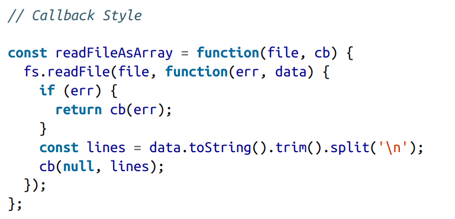
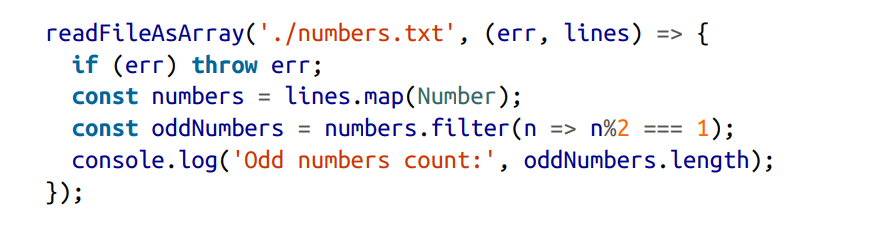
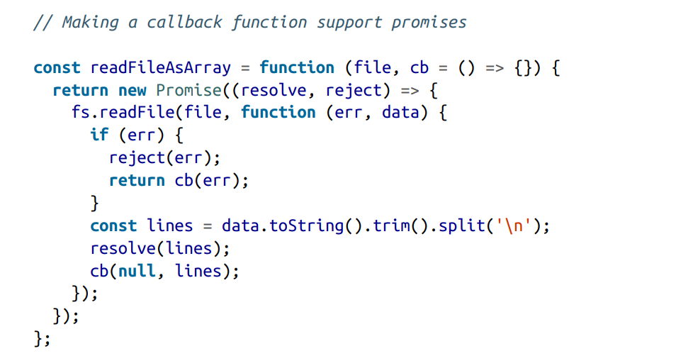
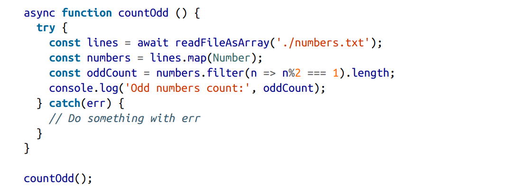
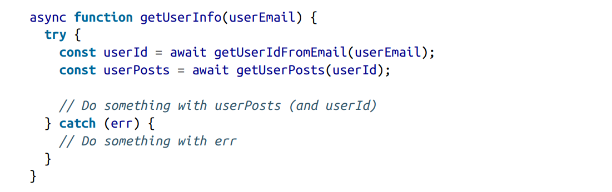
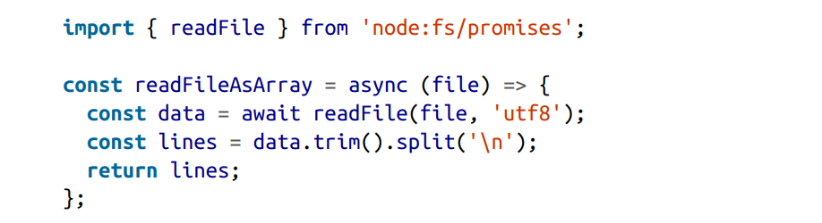
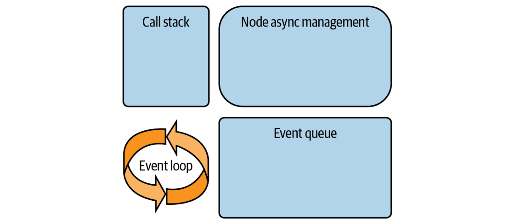

Asynchrony and Events¶
En este capitulo aprenderemos el concepto mas importante de Node, que es el modelo manejador de eventos(event driven model) que tambien es conocido como node blocking model Node asocia operaciones asincronas con eventos e internamente se correrlos independientemente de otras operaciones.
Sync Versus Async Handling¶
Si tienes una operacion sincronas lenta en tu servidor web de Node, en cuanto llegue la primera solicitud HTTP, esta bloqueara el hilo principal y el servidor no estara disponible para manejar mas solicitudes, hasta que esta no haya terminado.
Handler Function¶

La funcion readFilesAsArray es asincrona porque usa el metodo asincrono fs.readFile() .Una funcion se convierte en asincrona si usa cualquier funcion asincrona o retorna un objeto promesa. Tambien podemos crear una funcion asincrona usan la palabra async

El estilo callback de Node se usa aqui. El estandar para estructurar este estilo es, pasar una callback function como el utimo argumento a una funcion asincrona (Figure1). Esta es una de las mas comunes convenciones acerca del estilo callback en Node. Otra convencion es cuando las funciones callback tienen como primer agumento un error (Figure2).
Más allá de la coherencia, las convenciones de estilo callback con el error como primer argumento están diseñadas para facilitar la lectura y mejorar el manejo de errores. Si necesita trabajar con el estilo callback de Node, siempre debe estructurar sus funciones siguiendo estas convenciones.
Si se produce un error en la función asíncrona, esta llamará a la call back, pasándole ese error a través del argumento err. Si no se produce ningún error, el valor del argumento err será nulo. Cualquier función callback escrita para este estilo siempre debe comprobar la presencia del argumento err antes de utilizar cualquier otra cosa a la que tenga acceso. Si no se comprueba si hay error, los errores simplemente se ignorarán y eso es malo.
Promises¶
En vez de pasar una funcion callback como un argumento a una funcion asincrona y luego manejar los mismos casos de error y exito en el mismo lugar, un Object Promise permite manejar estos casos de forma separada y tambien permite encadenar mutiples llamadas asincronas en lugar de tener que anidarlas.
Si la funcion readFileAsArray soporta promesas podemos usar lo siguiente

Para permitir esta sintasis, la funcion asincrona necesita retornar una Promesa. En JavaScript puedes crear una Promesas usando el constructor Promise (Figure 3).
Creamos una funcion que retorne una Promesa Object usadando new Promise que envuelve a la funcion asincrona fs.readFile()
async /await¶
El patron async/wait mejora la lectura de codigo y manejar mejor los errores. Simplifica el alcance de las variables en torno a tu código asíncrono.
Así es como podemos consumir la versión con promesas de la función readFileAsArray con async/await:

Primero creamos un funcion async al cual es una funcion regular con la palabra async. Dentro de la función asíncrona, llamamos a la función readFileAsArray como si devolviera la variable lines (aunque devuelve una promesa). Para que esto funcione, usamos la palabra clave await delante de la llamada a la función. Después, continuamos con el código como si la llamada a readFileAsArray fuera síncrona.
Para gestionar los errores, envolvemos la llamada asíncrona en una instrucción try/catch. Para que todo funcione, ejecutamos la función asíncrona.
La sintaxis async/await simplifica el código, y esto es especialmente cierto cuando necesitas invocar varias funciones asíncronas que dependen unas de otras. A continuación, te mostramos un ejemplo de cómo la sintaxis async/await simplifica el flujo de código de varias funciones asíncronas:

Además de no tener que lidiar con llamadas .then/.catch y asegurarnos de que las funciones .then devuelvan promesas para encadenarlas, la versión async/await ofrece una ventaja sutil pero importante: ¡podemos utilizar los resultados de todas las llamadas asíncronas secuenciales en el mismo lugar! Tendríamos que escribir más código con la versión .then/.catch para lograrlo.
En muchos casos, tendrás que ejecutar las promesas en paralelo en lugar de hacerlo en secuencia. Una forma de hacerlo es mediante la llamada Promise.all([promesa1, promesa2, promesa3]). También puedes utilizar await [promesa1, promesa2, promesa3]. El resultado de ambas llamadas es una matriz que contiene los objetos resueltos en orden.
Podemos utilizar la característica async/await con cualquier función que admita una interfaz de promesas. No podemos usarla con funciones asíncronas de estilo callback, pero, como hemos visto antes, cualquier función diseñada con el estilo callback puede «promisificarse» fácilmente. De hecho, Node cuenta con una función de utilidad integrada que puede «promisificar» cualquier función que siga el estilo de callback «error-first». Por ejemplo, supongamos que tienes esta función clásica de Node.js:
const fs = require("fs");
fs.readFile("archivo.txt", "utf-8", (err, data) => {
if (err) throw err;
console.log(data);
});
readFile usa callback. Para “promisificarla”, puedes hacer esto:
const { promisify } = require("util");
const readFileAsync = promisify(fs.readFile);
readFileAsync("archivo.txt", "utf-8")
.then(data => console.log(data))
.catch(err => console.error(err));
readFileAsync devuelve una promesa, y podrías usar await también.
Además, algunos de los módulos integrados de Node admiten tanto el estilo de callback como el estilo de promise en su API. El módulo node:fs es un ejemplo de ello. Cuenta con una versión basada en promises de toda su API. A continuación se muestra una versión de readFileAsArray escrita utilizando la API basada en promises de node:fs:

Otra forma de implementar funciones de controlador es mediante objetos emisores de eventos. Mas adelante entraremos en detalles.
The Event Loop¶
¿Cómo exactamente se ejecuta una función manejadora en el hilo principal después de que su operación asíncrona se completa fuera del hilo principal?
Y lo que es más importante, cuando hay varias operaciones asíncronas y varias funciones de gestión, ¿cómo se gestionan y en qué orden vuelven al hilo principal?
Para responder estas preguntas, necesitamos entender tres estructuras principales: la pila de llamadas, las colas de eventos y el bucle de eventos.
V8 gestiona la ejecución de funciones JavaScript usando una estructura de pila simple conocida como la pila de llamadas. Una pila es una estructura de datos de último en entrar, primero en salir (LIFO) donde la última entidad agregada a ella es la primera entidad en ser procesada.
Cada vez que se llama a una función, una referencia a ella se coloca en la parte superior de la pila de llamadas. Cuando una función apilada llama a otras funciones (incluyéndose a sí misma recursivamente), una referencia a cada función anidada se coloca en la parte superior de la pila de llamadas.
Cuando se completa una llamada a función, su referencia es extraída de la pila de llamadas. Las llamadas a funciones anidadas se extraen una a la vez (desde la parte superior de la pila de llamadas) para completar la llamada inicial de la primera función que fue apilada.
Cualquier código JavaScript que escribas en Node debe colocarse en la pila de llamadas para que V8 lo ejecute. La pila de llamadas es de un solo hilo, lo que significa que cuando hay funciones en la pila de llamadas, todo lo demás (incluyendo las funciones manejadoras para operaciones asincrónicas) tendrá que esperar hasta que la pila de llamadas esté disponible nuevamente. Por eso es importante nunca escribir código que mantenga ocupada la pila de llamadas (como un bucle for de larga ejecución)
Mientras la pila de llamadas esté ocupada, todos los controladores de operaciones asíncronas quedarán en espera. Cualquier código que requiera un tiempo de ejecución prolongado debe ejecutarse fuera del hilo principal y de su única pila de llamadas.
Al apilar funciones en la pila de llamadas, cuando Node encuentra una tarea asíncrona, omite la pila de llamadas y procesa la tarea internamente. Dependiendo de la naturaleza de la tarea, Node puede utilizar un hilo diferente o aprovechar las características asíncronas del sistema operativo subyacente.
Node utiliza las características asincrónicas de su sistema operativo subyacente para realizar operaciones de E/S sin bloqueo. Para tareas vinculadas a la CPU y otras tareas que no pueden ser manejadas asincrónicamente por el SO, Node proporciona un pool de hilos a través de su biblioteca libuv. Esta biblioteca es la columna vertebral de todo lo asincrónico en Node. Es donde se implementa el bucle de eventos, y proporciona abstracciones de los detalles específicos de cada plataforma para que Node pueda ejecutarse de manera consistente en diferentes sistemas operativos.
Cuando se completa una tarea asíncrona, Node coloca su función manejadora asociada en una estructura de cola conocida como la cola de eventos (o cola de tareas). Una cola es una estructura de primero en entrar, primero en salir (FIFO) donde lo primero que se agrega es lo primero que se procesa.
Para que una función manejadora se ejecute, necesita ser colocada en la pila de llamadas. Ese es el trabajo del bucle de eventos (ver Figura 7). Es un bucle infinito simple con un trabajo simple: cuando la cola de eventos tiene funciones manejadoras y la pila de llamadas está vacía, toma la primera función en cola de la cola de eventos y la coloca en la pila de llamadas para que V8 la ejecute. Luego espera hasta que la pila de llamadas esté vacía nuevamente para procesar la siguiente función manejadora en cola y sigue repitiendo eso hasta que no haya más funciones manejadoras en la cola de eventos para procesar.

Este flujo se produce en cualquier operación asíncrona, ya sea al gestionar una solicitud entrante en un servidor web, leer un archivo del sistema de archivos, iniciar un temporizador ocifrar datos.
Cada tarea asíncrona cuenta con una función de gestión que se coloca en una cola de eventos, es recogida por el bucle de eventos, se añade a la pila de llamadas y, a continuación, es ejecutada por V8.
El bucle de eventos tiene muchas fases con diferentes prioridades, y funciona con múltiples colas de eventos asociadas a estas fases. Hay una fase para temporizadores, otra para callbacks a nivel de sistema, una para operaciones de E/S, y algunas más. Las promesas y tareas de alta prioridad se manejan en su propia cola conocida como la cola de microtareas.
Otra opción para organizar y usar código asíncrono en Node es mediante el uso de objetos emisores de eventos y funciones escuchadoras de eventos. Hablemos de eso a continuación.
Event Emitters¶
Usar eventos para manejar tareas asíncronas lleva el juego a un nivel completamente diferente. Los eventos se tratan de una buena comunicación. No importa qué tan compleja sea una situación, una buena comunicación hace que las cosas mejoren mucho. Esto es cierto en la vida, y es cierto con los eventos de Node.
El concepto en Node es simple: los objetos emisores emiten eventos nombrados que provocan que se llamen funciones manejadoras previamente registradas.
Un objeto emisor básicamente tiene dos características principales:
- Emitir eventos nombrados
- Registrar (y anular el registro de) funciones oyentes
Para crear un objeto emisor de eventos, podemos instanciar desde la clase EventEmitter o desde cualquier clase que la extienda. Esta última permite una lógica personalizada que puede compartirse entre múltiples objetos emisores de eventos
import { EventEmitter } from 'node:events';
class MyEmitter extends EventEmitter {
// Custom logic for all event emitter objects
}
const myEmitter = new MyEmitter();
En cualquier punto del ciclo de vida de los objetos emisores, podemos usar la función emit para emitir cualquier evento nombrado que queramos:
myEmitter.emit('something-happened', data);
// Or within the MyEmitter class:
this.emit('something-happened', data);
import fs from 'node:fs';
import { EventEmitter } from 'node:events';
class ReaderEmitter extends EventEmitter {
readFileAsArray(file) {
fs.readFile(file, (err, data) => {
if (err) {
this.emit('error', err);
return;
}
const lines = data.toString().trim().split('\n');
this.emit('data', lines);
});
}
}
const reader = new ReaderEmitter();
reader.on('data', (lines) => {
const numbers = lines.map(Number);
const oddNumbers = numbers.filter((n) => n % 2 === 1);
console.log('Odd numbers count: ', oddNumbers.length);
});
reader.on('error', (err) => {
throw err;
});
reader.readFileAsArray('./numbers.txt');
Asynchrony¶
Al igual que con el estilo de callbacks, tener un objeto emisor no significa que los eventos se activen de forma asíncrona. Veamos un ejemplo:
import { EventEmitter } from 'node:events';
class WithLog extends EventEmitter {
execute(taskFunc) {
this.emit('begin');
taskFunc();
this.emit('end');
}
}
const withLog = new WithLog();
withLog.on('begin', () => console.log('About to execute'));
withLog.on('end', () => console.log('Done with execute'));
withLog.execute(() => console.log('*** Executing task ***'));
Para ver la secuencia de lo que sucederá aquí, definimos escuchadores para ambos eventos nombrados y ejecutamos una tarea de ejemplo para activar los eventos. Este es el resultado de eso:
Lo que quiero que notes sobre este flujo es que todo ocurre de manera síncrona. No hay nada asíncrono en este código, y debido a que este código está diseñado como un conjunto síncrono de líneas, si pasamos una taskFunc asíncrona para ejecutar, los eventos emitidos ya no serán precisos. Podemos simular el caso con una llamada setImmediate: El resultado que obtenemos para eso no será correcto: Para emitir un evento después de que una función asíncrona haya terminado, necesitaremos combinar callbacks (o promesas) con la comunicación basada en eventos. Aquí hay un ejemplo:import fs from 'node:fs';
import { EventEmitter } from 'node:events';
class WithTime extends EventEmitter {
execute(asyncFunc, ...args) {
this.emit('begin');
console.time('execute');
asyncFunc(...args, (err, data) => {
if (err) {
return this.emit('error', err);
}
this.emit('data', data);
console.timeEnd('execute');
this.emit('end');
});
}
}
const withTime = new WithTime();
withTime.on('begin', () => console.log('About to execute'));
withTime.on('end', () => console.log('Done with execute'));
withTime.execute(fs.readFile, import.meta.filename);
class WithTime extends EventEmitter {
async execute(asyncFunc, ...args) {
this.emit('begin');
try {
console.time('execute');
const data = await asyncFunc(...args);
this.emit('data', data);
console.timeEnd('execute');
this.emit('end');
} catch(err) {
this.emit('error', err);
}
}
}
Errors¶
El evento error es especial. Siempre debe ser manejado. Dado que no definimos una función manejadora para el evento error de WithTime, veamos qué sucede si llamamos al método execute con un argumento inválido. Agrega la llamada incorrecta antes de la correcta:
lass WithTime extends EventEmitter {
// ...
}
// ...
withTime.execute(fs.readFile, ''); // bad call
withTime.execute(fs.readFile, import.meta.filename);
events.js:163
throw er; // Unhandled 'error' event
^
Error: ENOENT: no such file or directory, open ''
La segunda llamada a .execute se verá afectada por este fallo y potencialmente no se ejecutará en absoluto. Si registramos un listener para el evento especial de error, el comportamiento del proceso de Node cambiará. Hagámoslo:
// ...
withTime.on('error', (err) => {
// Do something with err, for example log it somewhere
console.log(err)
});
withTime.execute(fs.readFile, ''); // BAD CALL
withTime.execute(fs.readFile, import.meta.filename);
{ Error: ENOENT: no such file or directory, open '' errno: -2, code:
'ENOENT' ... }
execute: 4.276ms
Examples¶
Muchos de los módulos integrados de Node tienen objetos en sus APIs que son instancias de la clase EventEmitter. Estos objetos emiten ciertos eventos que podemos manejar en nuestro código. Por ejemplo, el simple servidor HTTP "Hello World" de Node que vimos en el Capítulo 1 puede escribirse usando eventos:
import { createServer } from 'node:http';
const server = createServer();
server.on('request', (req, res) => {
res.writeHead(200, { 'Content-Type': 'text/plain' });
res.end('Hello World');
});
server.on('listening', () => {
console.log('Server is running...');
});
server.listen(3000, '127.0.0.1');
En el Capítulo 6, vamos a aprender sobre los streams de Node, que también son objetos emisores de eventos. Aquí hay un ejemplo simple de cómo podemos leer el contenido de un archivo con un objeto stream:
import { createReadStream } from 'node:fs';
const readStream = createReadStream('input.txt', 'utf8');
readStream.on('data', (chunk) => {
console.log('Read chunk:', chunk);
});
readStream.on('end', () => {
console.log('Reading finished');
});
process.on('uncaughtException', (err) => {
// An error was unhandled. Process should exist.
// Do your thing
// But force exit the process after
process.exit(1);
});
Si se registran múltiples funciones controladoras para el mismo evento, la invocación de esas funciones será en orden. La primera función controladora que registremos será la primera función en ejecutarse cuando se active el evento:
withTime.on('data', (data) => {
console.log(`Length: ${data.length}`);
});
withTime.on('data', (data) => {
console.log(`Characters: ${data.toString().length}`);
});
withTime.execute(fs.readFile, import.meta.filename);
withTime.on('data', (data) => {
console.log(`Length: ${data.length}`);
});
withTime.prependListener('data', (data) => {
console.log(`Characters: ${data.toString().length}`);
});
withTime.execute(fs.readFile, import.meta.filename);
Summary¶
El enfoque basado en eventos de Node es un concepto simple pero poderoso que permite gran flexibilidad y control sobre qué hacer antes, durante y después de las operaciones asíncronas.
Podemos usar callbacks, promesas o emisores de eventos para trabajar con operaciones asíncronas. El bucle de eventos de Node gestiona tareas asíncronas mediante colas de eventos.
Node tiene un módulo de eventos que podemos usar para definir objetos que soportan múltiples eventos y múltiples manejadores para estos eventos. Las funciones manejadoras siempre están escuchando los eventos a los que están vinculadas y se ejecutan cuando estos eventos son activados.
Los eventos se activan para indicar que se ha cumplido una condición.
En el próximo capítulo, discutiremos cómo manejar errores en Node y cómo depurar aplicaciones Node.